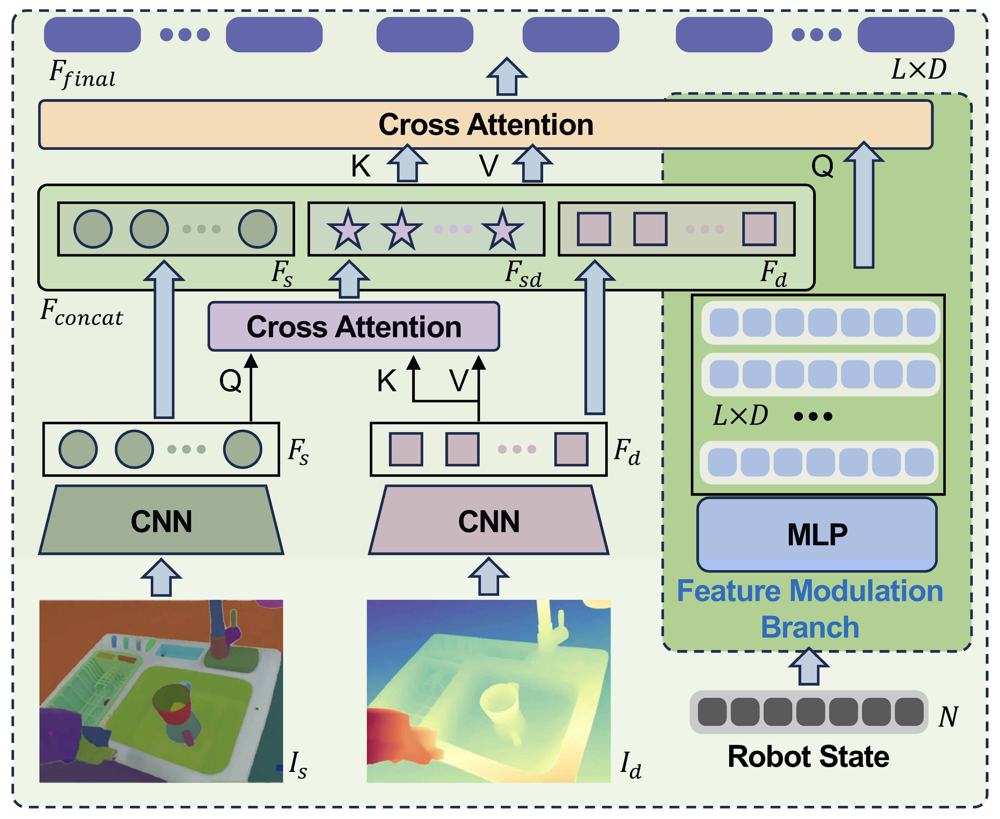

Multi-Modal Dynamic Attention Modulation Module

Overview of Multi-Modal Dynamic Attention Modulation Module. To facilitate the dynamic adaptation of the fused visual representation to the robot's embodiment, we propose the MDAM module. This module utilizes the robot's state as a dynamic modulation signal to guide a cross-attention mechanism, enabling adaptive fusion of semantic and depth features according to the robot’s current embodiment. The robot's state inherently encodes critical information regarding its pose and motion, which directly impacts task context and visual attention priorities. For instance, when the robot arm is in proximity to an object, it likely indicates an impending manipulation task; conversely, if the joint angles suggest a placement posture, the model should shift attention towards potential placement targets. Additionally, a dedicated Feature Modulation Branch compresses the fused features into a compact representation, ensuring the retention of essential task-relevant information while significantly reducing computational overhead.